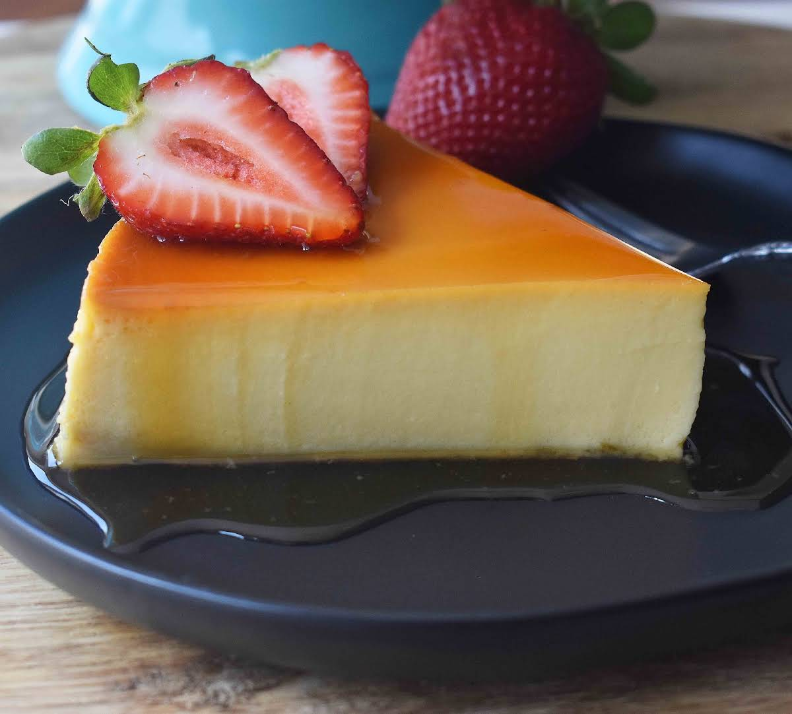

RECETA DE FLAN

Ingredientes:
3/4 De taza de azúcar refinada
1 Lata de Leche Condensada
1 Lata de Leche Evaporada carnations clavel
1 Paquete de queso crema a temperatura ambiente (190 g)
5 Huevos
1 Cucharada de esencia de vainilla
1. Horno Precalentado a 180 C
2. Vierte el azúcar en una flanera y calienta a fuego medio para que se forme el caramelo, ladea con cuidado el molde para cubrir la superficie y las paredes
3. Licua la lechera con la leche evaporada el queso crema, los huevos y la esencia de vainilla. vierte la preparacion en la flanera y tapa el papel aluminio sellando las orillas. coloca en un recipiente y cocina a baño maria en el horno a 180 C durante 1 1/2 horas.
4. Retira del fuego y deja enfriar por completo, delmolda y sirve
VIDEO